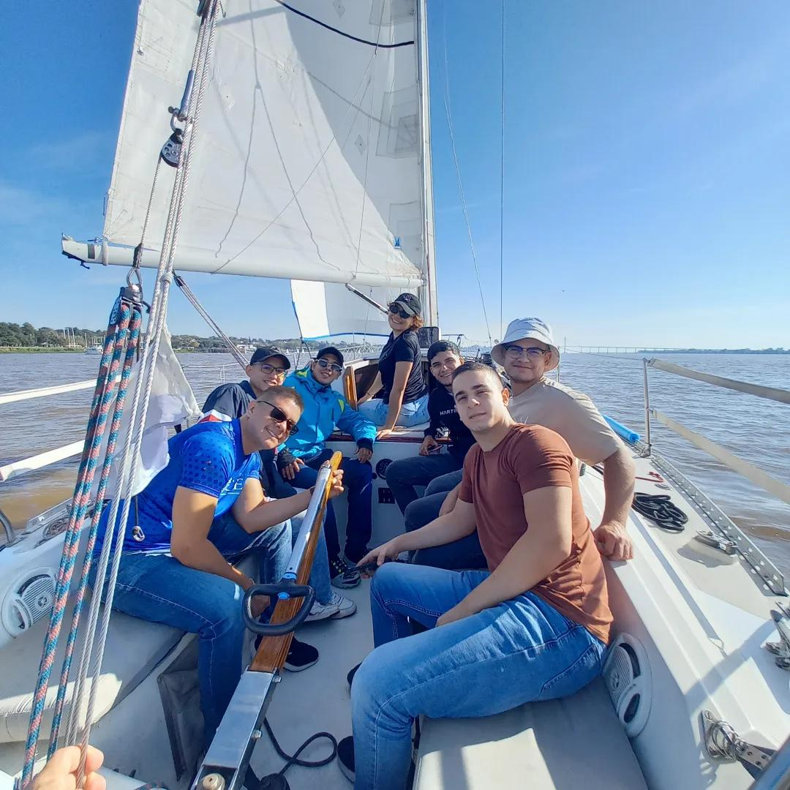
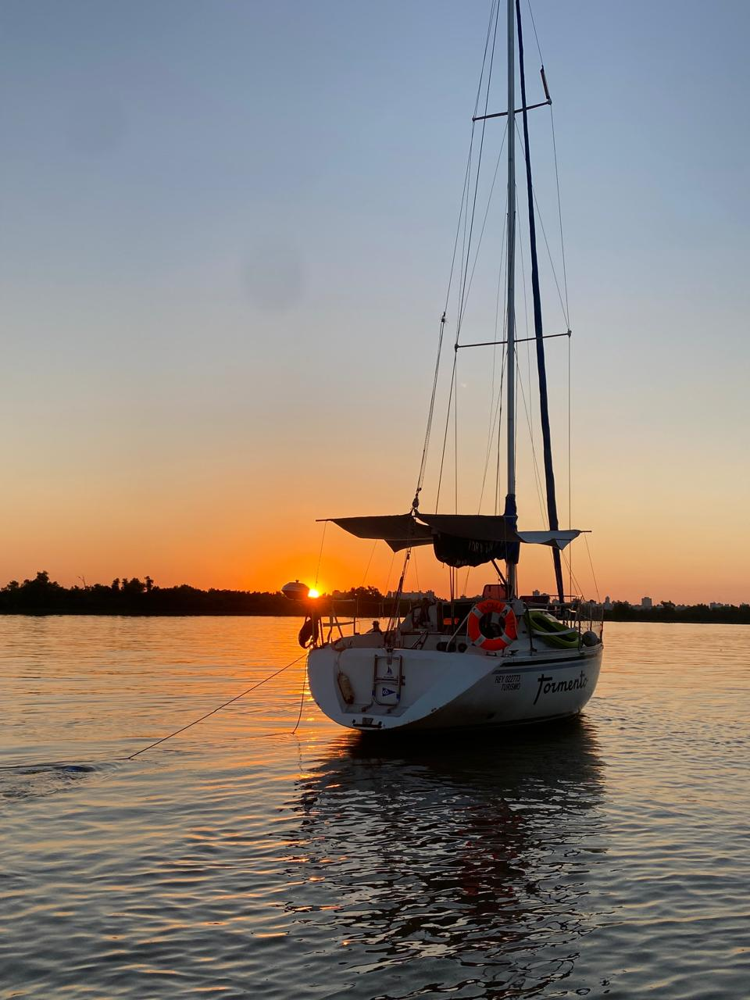
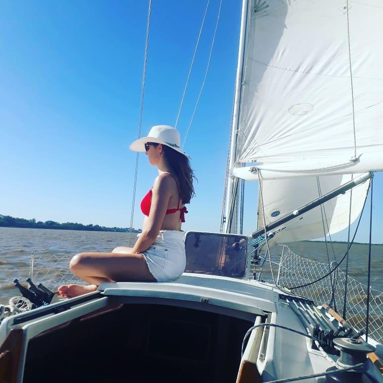
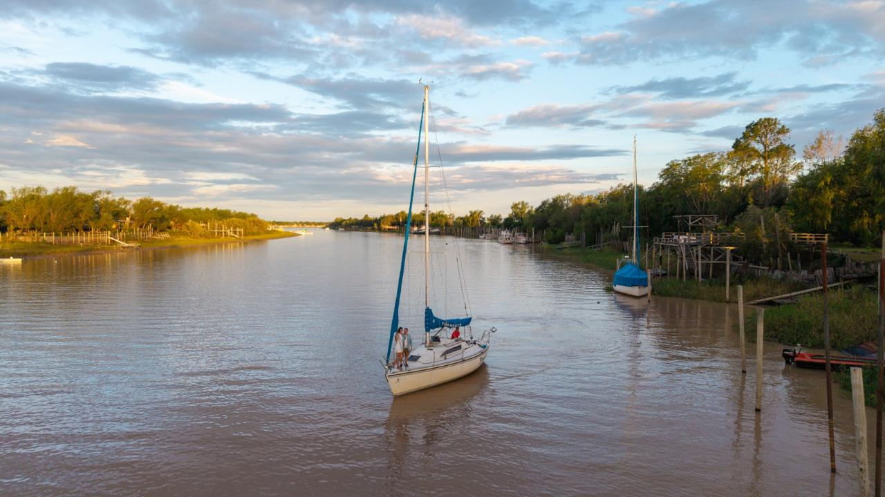
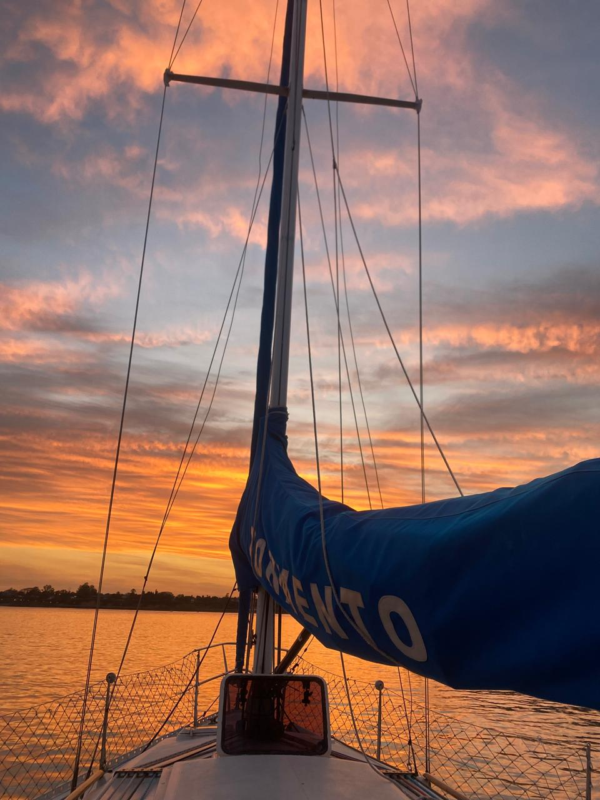
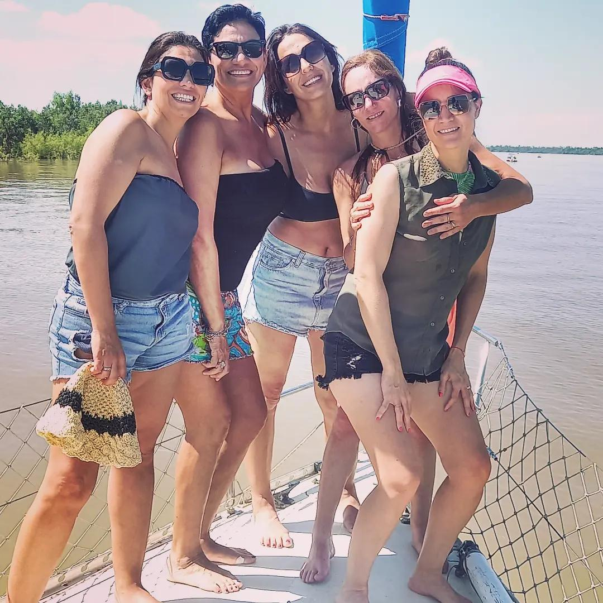
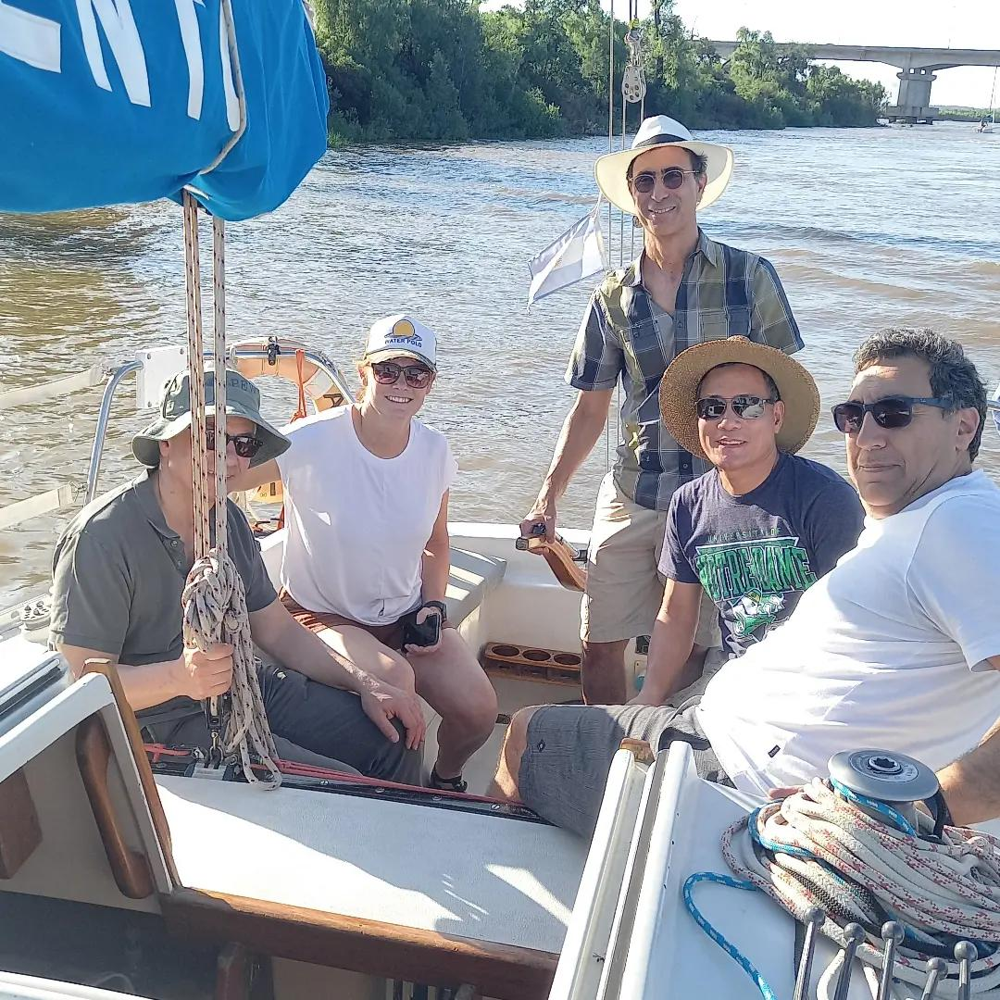
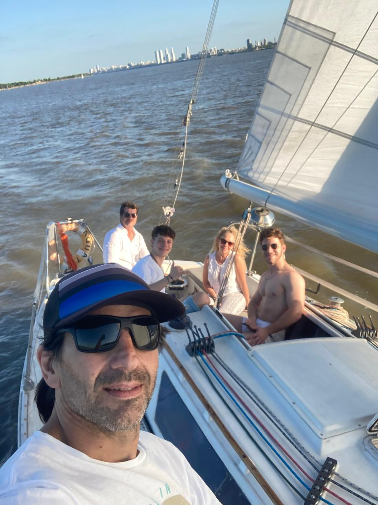
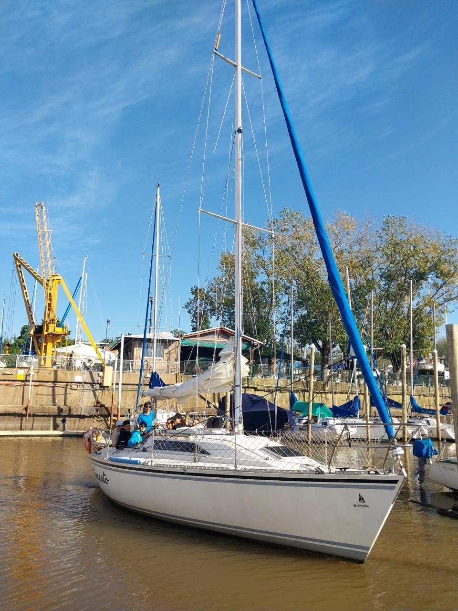

Navegar
Recorré el Paraná a bordo de un velero, idealmente a vela cuando el viento del día lo permite.

Rosario · Río Paraná
Una experiencia privada para compartir el río con tu grupo. Tu velero, tu tripulación, tu ritmo.
GoSailingRosario
Un paseo privado de 3 horas por el río Paraná, a bordo de un velero que queda destinado exclusivamente a tu grupo. El recorrido es flexible: navegar, relajarse o disfrutar del atardecer, según lo que busques y lo que permita el día.
La experiencia
No es un recorrido fijo. Charlás con el capitán qué querés hacer y se coordina dentro de las posibilidades del día y del clima.

Recorré el Paraná a bordo de un velero, idealmente a vela cuando el viento del día lo permite.

Bajar un cambio y disfrutar del río sin apuro. El recorrido se conversa con el capitán según lo que busque el grupo.

Según las condiciones del día, puede ser posible detenerse a nadar. También es perfectamente válido navegar sin meterse al agua.

El paseo también puede coordinarse para disfrutar la puesta de sol sobre el río, con el horario a acordar con el capitán.

Familia, amigos o un grupo que simplemente quiere estar junto en el río, en un velero que es solo para ustedes.

Una alternativa distinta para un encuentro de equipo. Hay opciones adicionales de bebidas y picadas, a coordinar aparte.
Qué incluye
A cargo de la navegación durante todo el paseo.
El velero completo, exclusivo para tu grupo.
Incluido, sin cargos adicionales.
Las medidas de seguridad necesarias para la navegación.
Incluidas. Cualquier duda puntual, consultanos directo por WhatsApp.
Para quién es

Una salida diferente para disfrutar juntos del río.
Una experiencia privada para compartir, navegar, relajarse y disfrutar.
Una alternativa diferente para encuentros y actividades de grupos de trabajo.
Precio
$75.000 por persona
Paseo privado de 3 horas. Para grupos de menos de 4 personas, se abona el equivalente a 4 pasajeros.
No hay una cantidad mínima para reservar: podés ir solo, en pareja o en grupo.
Calculá tu paseo
$300.000
Equivale a 4 pasajeros (mínimo facturable)
Consultar por WhatsAppGalería
Ubicación

Preguntas frecuentes
El paseo tiene una duración habitual de 3 horas.
Sí. El velero queda destinado exclusivamente a tu grupo — no se comparte con otros grupos desconocidos.
Hasta 7/8 personas como máximo, según la capacidad de la embarcación.
No. Podés ir solo, en pareja o en un grupo chico. Sí, cuando el grupo tiene menos de 4 personas, se abona el equivalente a 4 pasajeros.
El precio incluye capitán certificado, la embarcación, combustible, las medidas de seguridad necesarias y bebidas.
El horario se coordina directamente con el capitán, no hay un horario fijo. También es posible realizar el paseo al atardecer.
La navegación a vela depende de las condiciones climáticas y del viento del día. El capitán coordina la mejor experiencia posible dentro de las condiciones del día.
Puede ser posible nadar o tirarse al agua, según las condiciones y la coordinación con el capitán. También es perfectamente válido contratar el paseo simplemente para navegar y disfrutar del río.
Sí, podés llevar tu propia comida y bebida. También se permite alcohol, siempre con consumo responsable.
Sí, las mascotas pueden acompañar el paseo. Se recomienda coordinarlo previamente con el capitán.
La salida es desde el Club de Velas Rosario, Av. Colombres 956, Rosario, Santa Fe.
Sí. El paseo privado puede ser una alternativa distinta para una reunión o encuentro de trabajo. Existen opciones adicionales de bebidas y picadas, con costo adicional, a coordinar directamente.
Reservas y consultas
Coordiná tu paseo directamente por WhatsApp. Te respondemos con la disponibilidad y cerramos los detalles juntos.
Consultar por WhatsApp